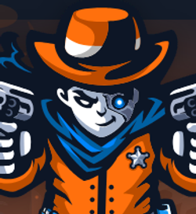

Qui je suis
Je suis actuellement étudiant en autodidacte dans le domaine de la cybersécurité. Ma formation se concentre principalement sur la sécurité offensive, tout en abordant également des aspects de la sécurité défensive. J'exploite des plateformes telles que HackTheBox et TryHackMe, où je participe activement à des challenges pour acquérir de nouvelles techniques, rester informé des dernières vulnérabilités, méthodes et outils, et obtenir une première expérience pratique dans le domaine.
Mon parcours
Mes débuts
Depuis mon enfance, j'ai manifesté un vif intérêt pour l'informatique en général. J'aimais observer et comprendre le fonctionnement des ordinateurs. Arrivé au lycée, j'ai eu l'opportunité de suivre une
première formation dans ce domaine en optant pour un BAC pro SN (Systèmes Numériques) avec une spécialisation en RISC (Réseaux Informatiques et Systèmes Communicants). Pendant cette période, j'ai réalisé
des stages en entreprise où mes activités étaient principalement axées sur le support utilisateur, la mise en place de matériel informatique et la gestion de parc informatique.
Études supérieures
2017 à 2019 : J'ai ensuite poursuivi mes études en BTS SN (Systèmes Numériques) option A (Informatique et Réseaux). Pendant cette formation, j'ai également effectué un stage similaire aux précédents.
Au cours de ce BTS, j'ai acquis les bases de la programmation en Python, C et C++. J'ai également développé des compétences fondamentales dans le domaine du développement web, en travaillant sur des langages
tels que CSS, PHP, HTML, JavaScript et SQL. À noter que j'ai dû compléter ma formation en parallèle de l'école sur certains sujets, car le programme scolaire ne couvrait pas toutes mes aspirations
(par exemple, en utilisant OpenClassroom).
Autodidacte
Juin 2022 - Aujourd'hui : À la suite de l'obtention de mon BTS, j'ai décidé de mettre fin à mes études pour me lancer en autodidacte. Pourquoi cette décision ? Pour être franc, je ressens une aversion pour le
système éducatif (du moins, celui que j'ai connu). Je ne m'y sentais pas à l'aise, je n'ai trouvé aucune école qui suscitait mon intérêt (soit elles n'entraient pas dans mon budget, soit elles étaient trop
éloignées, soit elles délivraient des diplômes douteux), et j'ai été déçu par l'expérience éducative. Certes, j'y ai acquis des connaissances et des compétences, mais je suis convaincu qu'en 5 ans, j'aurais pu
apprendre bien plus de manière autonome.
C'est ainsi que j'ai entamé l'apprentissage des fondamentaux de la cybersécurité sur TryHackMe, en suivant des cours et en participant à des CTF. Quelques mois plus tard, j'ai lancé ma chaîne YouTube
pour partager ma passion et aider ceux qui, comme moi, débutaient, en proposant des comptes rendus écrits et des vidéos sur les CTF et challenges auquels je participais. Lorsque je me suis senti prêt,
je me suis inscrit sur la plateforme HackTheBox pour accéder à des épreuves de niveau plus avancé. J'ai suivi les formations "Penetration Testing Student" et "Cloud Foundations & Management" de la plateforme INE,
qui m'ont ensuite permis de réussir l'eJPT (eLearnSecurity Junior Penetration Tester) et l'ICCA (INE Certified Cloud Associate).
Mes certifications

eJPT

ICCA
{kind=link}

HackTheBox - Prolab Dante
Mes réseaux

YouTube

Github